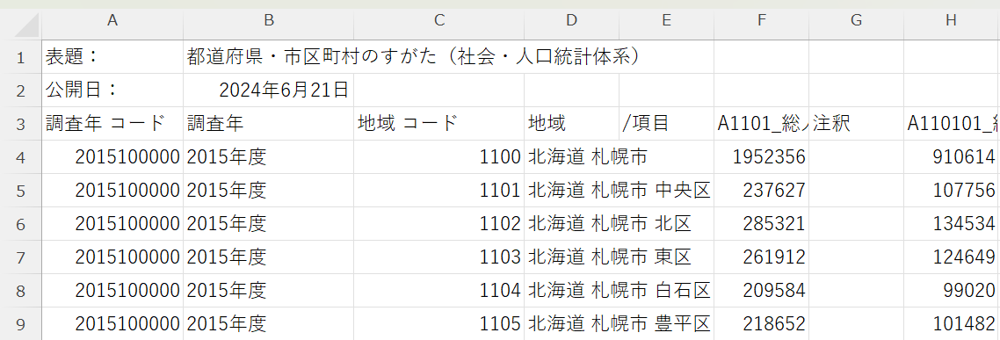

第1部 データを読む・加工する
データを縦にくっつける
bind_rowsで複数年のデータを合体させます。ここで役所のcsvの「クセ」に初めて正面からぶつかります。
つぎに、複数のデータを合体させるための関数を学んでいきましょう。まずはいちばんシンプルな、bind_rows() という関数から。
これまでは2020年の国勢調査データを使っていましたが、ここからはさらに2000年、2005年、2010年、2015年のデータも使っていきます。それぞれのデータを読み込んでいきましょう。
同じ統計でもデータの形式がいろいろ違う
では、まずは2015年から。2020年のときと同じように、read_csv() 関数を使って読んでみます。
read_csv("data/人口データ2015.csv", skip = 8)# A tibble: 1,910 × 5
`2015100000` `2015年度` `01105` `北海道 札幌市 豊平区` ...5
<dbl> <chr> <chr> <chr> <lgl>
1 2015100000 2015年度 01106 北海道 札幌市 南区 NA
2 2015100000 2015年度 01107 北海道 札幌市 西区 NA
3 2015100000 2015年度 01108 北海道 札幌市 厚別区 NA
4 2015100000 2015年度 01109 北海道 札幌市 手稲区 NA
# ℹ 1,906 more rowsあれ? 列名が何かおかしいですね。たとえば4列目の名前が「北海道 札幌市 豊平区」となってしまっています。データの「中身」になるべきものが、列の名前になってしまっているようです。なぜでしょうか。ファイルをExcelなどで開いて、確認してみましょう。

こうなっています。2020年の人口データのファイルでは、1〜8行目にはあまり意味のない情報が入っていたので、skip=8 と指定することで、8行分を飛ばして読み込みました。でもこのファイルでは、意味のない情報は1〜2行目にしか入っていません。つまり3行目以降を読み込むのが正解だったのです。
read_csv("data/人口データ2015.csv", skip = 2)文字コードでつまずく
次に2010年のデータも読み込んでみます。Excelで確認すると、5行目まで飛ばして読めばよさそうです。やってみましょう。
read_csv("data/人口データ2010.csv", skip = 5)あれ? やっぱりうまく行きませんね。
unable to translate '<92><8d><8e><df>' to a wide stringこんなふうに叱られました。読めない文字があると言っています（input string 1 is invalid UTF-8 と出ることもあります。文言はRやパッケージのバージョンによって変わりますが、言っていることは同じです）。文字コードがUTF-8じゃないから読み込めないようです。日本語だと、可能性が高い文字コードはShift-JISです。そこで、文字コードを指定して読み込みましょう。
read_csv("data/人口データ2010.csv", skip = 5, locale = locale(encoding = "CP932"))これでうまく行きました。
bind_rows——縦に積み上げる
ではいよいよ、bind_rows() 関数を使って、読み込んだデータを合体させていきます。
df <- bind_rows(df2020,
read_csv("data/人口データ2015.csv", skip = 2),
read_csv("data/人口データ2010.csv", skip = 5,
locale = locale(encoding = "CP932")))bind_rows() 関数の括弧のなかでは、すでに読み込み済みの df2020 と、2015年と2010年のデータをそれぞれ read_csv() 関数で読み込んだものの三つがコンマでつながっています。これで合体させたものを、df というオブジェクトに代入しているわけです。
bind_rows() がやっているのは、列の名前を見比べて、同じ名前の列を同じ列に積み上げるという作業です。だから列の並び順が違っていても平気ですし、片方にしかない列があっても、足りないほうはNAで埋めて合体してくれます。
列の名前をそろえる
さて、この df というtibbleには余計な列がたくさんあったり、列の名前が長ったらしいうえに日本語なので扱いにくかったりします。シンプルなものに変えてみましょう。df2020 のときにやったのと基本は同じですが、今回は複数の年のものが混じっているのが大きな違いです。この年のデータと地域名、それぞれの総人口という三つの列に絞りましょう。
df_simple <- df %>%
select(調査年,
地域,
`A1101_総人口【人】`) %>%
rename(year = 調査年,
region = 地域,
population = `A1101_総人口【人】`)これで、「年」「自治体名」「人口」の3列だけのすっきりしたデータになりました。
次の章では、くっつけたデータを、年を列の名前にした横長の形に組み替えたり、縦長に戻したりします。